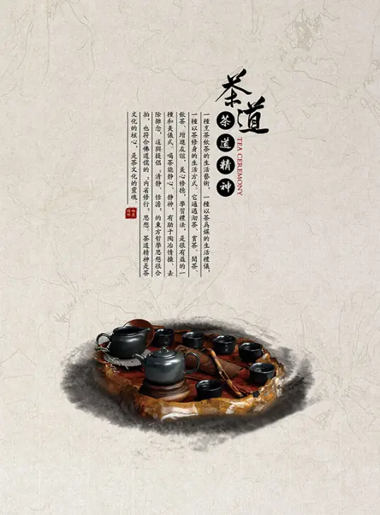

一盏清茶，千年风雅
中国是茶的故乡，茶文化的发源地。从神农尝百草以茶解毒，到陆羽著《茶经》立万世茶道之基，茶，早已超越了饮品的范畴，成为中华文明的精神符号。
中国传统制茶技艺及其相关习俗于2022年入选联合国教科文组织人类非物质文化遗产代表作名录。从茶叶的种植、采摘、制作到冲泡品饮，每一个环节都承载着深厚的文化内涵。
中国六大茶类
绿茶 · 清汤绿叶
代表性名茶：西湖龙井、碧螺春、黄山毛峰。绿茶是不发酵茶，保留了鲜叶的天然物质，口感鲜爽清醇。
红茶 · 红汤红叶
代表性名茶：正山小种、祁门红茶、滇红。红茶是全发酵茶，茶性温和，滋味醇厚甘温。
乌龙茶 · 绿叶红镶边
代表性名茶：铁观音、大红袍、冻顶乌龙。乌龙茶是半发酵茶，既有绿茶的清香，又有红茶的醇厚。
白茶 · 满披白毫
代表性名茶：白毫银针、白牡丹。白茶是微发酵茶，制作工艺最自然，毫香清鲜，滋味清甜回甘。
黑茶 · 陈香醇厚
代表性名茶：普洱茶、六堡茶。黑茶是后发酵茶，越陈越香，有助消化解油腻的功效。
黄茶 · 黄汤黄叶
代表性名茶：君山银针、蒙顶黄芽。黄茶是轻发酵茶，加工中有闷黄工序，形成黄汤黄叶的品质特征。

茶道精神：和、静、怡、真
中国茶道的核心精神可概括为四字——和、静、怡、真。「和」是茶道的哲学核心，强调人与自然、人与人之间的和谐；「静」是品茶的心境，心静方能体会茶的真味。
「怡」是品茶的精神享受，在品茗中获得身心的愉悦；「真」是茶道的终极追求，追求茶之真味、人之真情、道之真理。一杯清茶，不仅是味觉的享受，更是精神的修行。
「茶之为饮，发乎神农氏，闻于鲁周公。」—— 陆羽《茶经》